16 frames · 2:41 · 1080×1920 · English voice-over
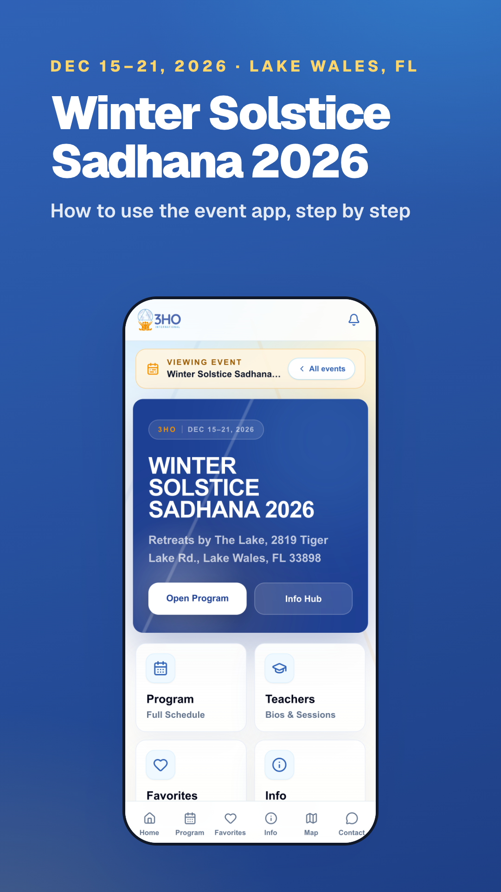
“Welcome to Winter Solstice Sadhana 2026. Here's how to use the event app, step by step.”
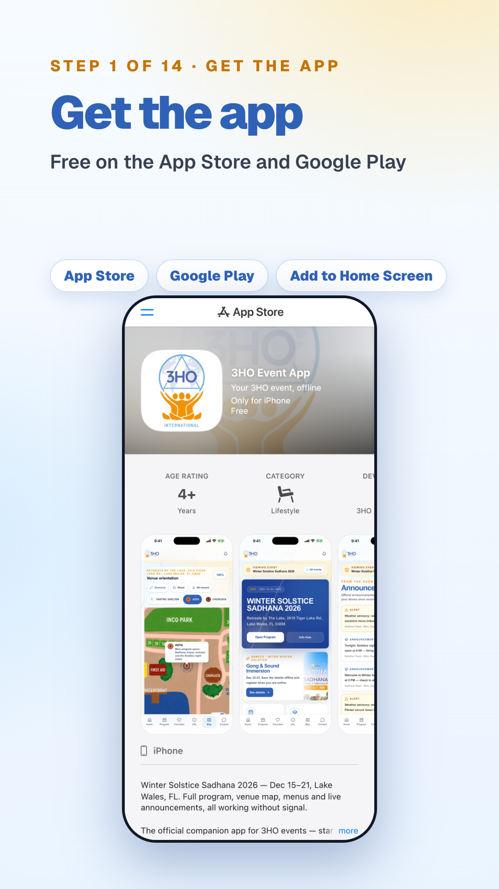
“Download the free 3HO Event App from the App Store or Google Play.”
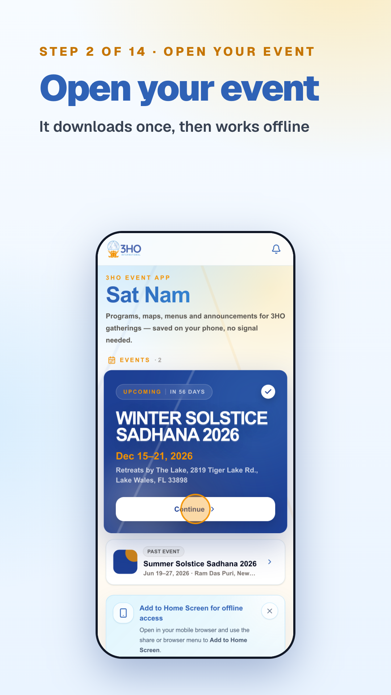
“Open the app and tap Winter Solstice Sadhana 2026. It downloads once, then works offline.”
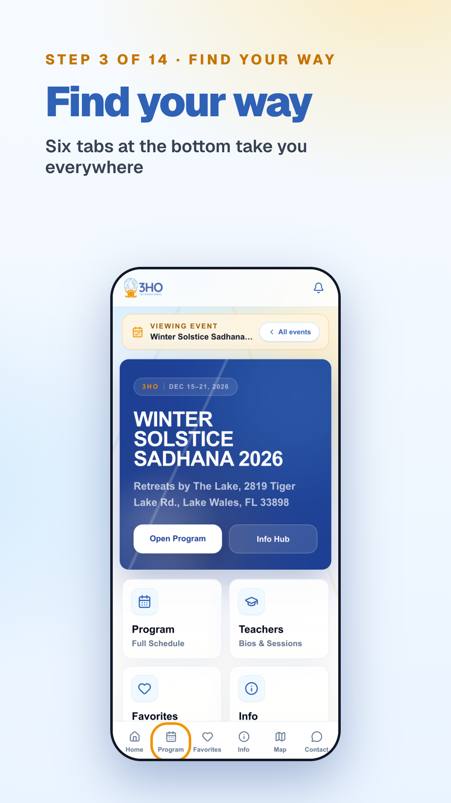
“The bar at the bottom takes you everywhere: Home, Program, Favorites, Info, Map and Contact.”
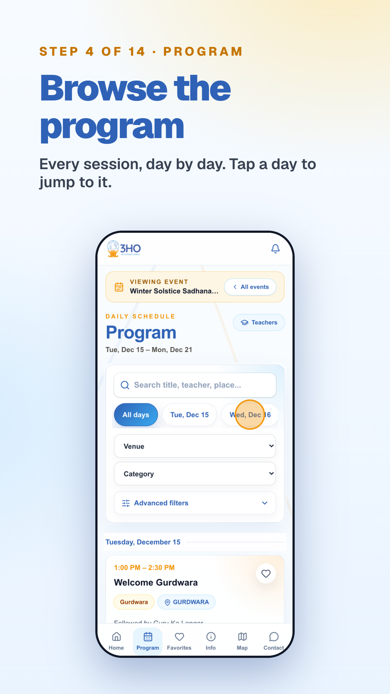
“In Program you'll find every session. Tap a day to jump straight to it.”
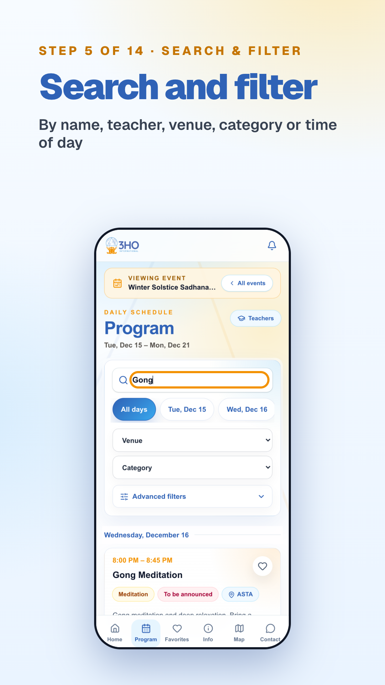
“Looking for something specific? Search by name or teacher, or filter by venue, category and time of day.”
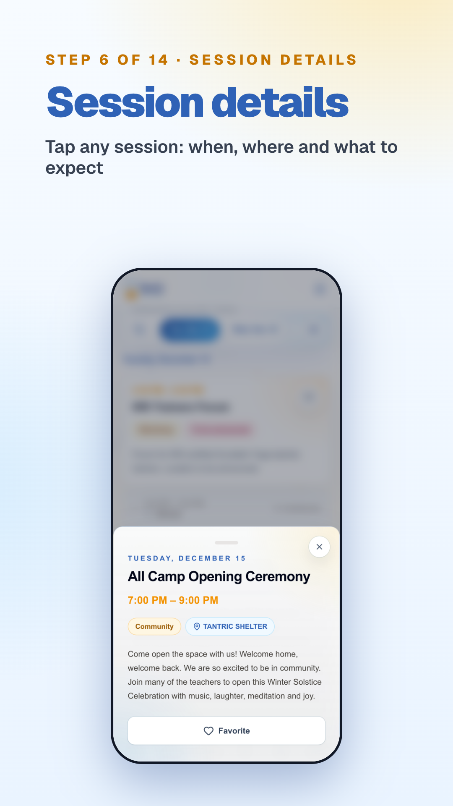
“Tap any session to see when and where it is, and what to expect.”
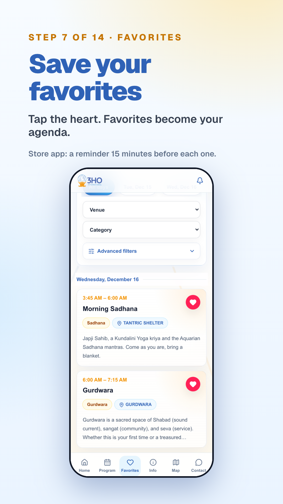
“Tap the heart to save a session. Your Favorites become your personal agenda, and the app reminds you 15 minutes before.”
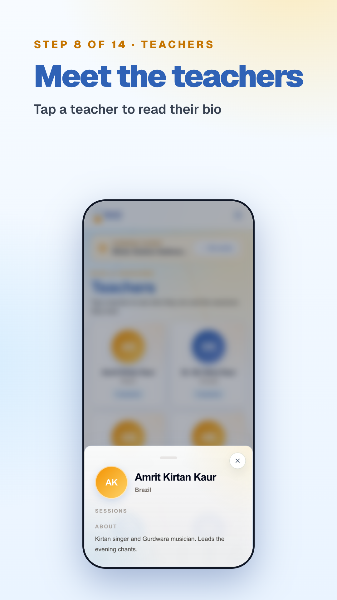
“Tap Teachers to meet the people leading the event and read their bios.”
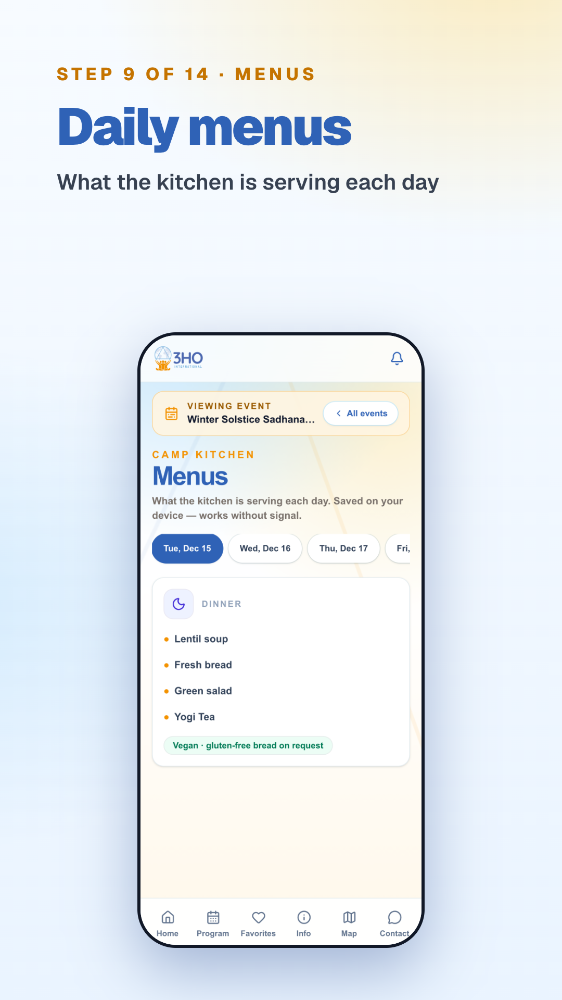
“Check Menus to see what's being served each day.”
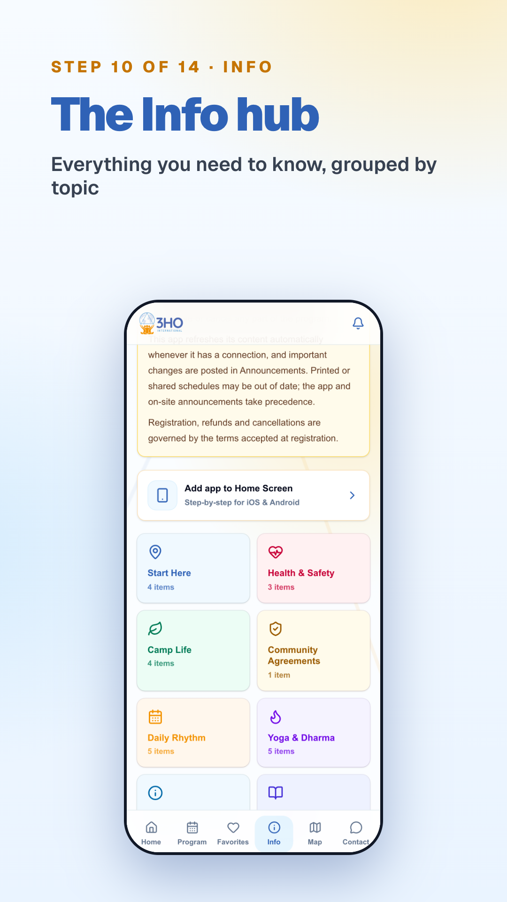
“Info gathers everything you need to know, grouped by topic.”
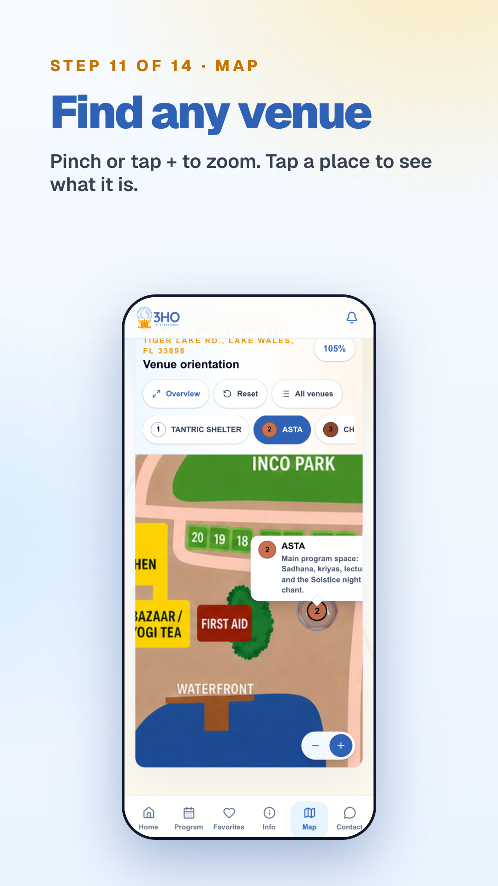
“Use the Map to find any venue. Pinch or tap plus to zoom, and tap a place to see what it is.”
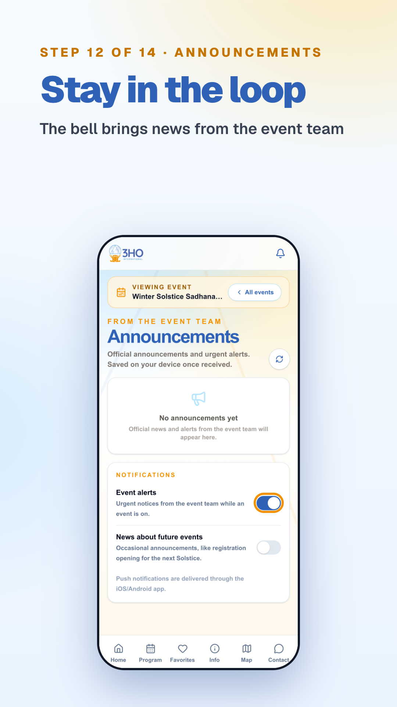
“The bell shows announcements from the event team. Turn on alerts so you don't miss a change.”
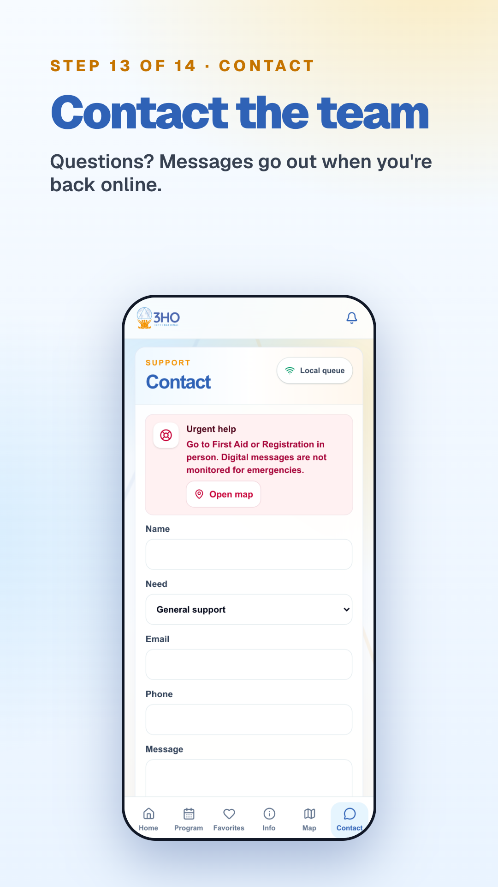
“Have a question? Send it from Contact. If you're offline, it goes out when you're back.”
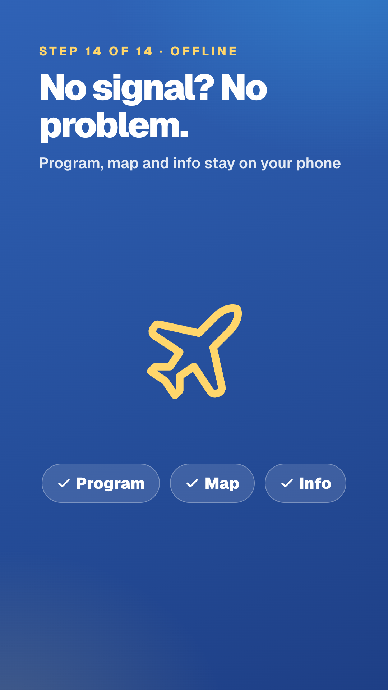
“No signal? No problem. Your program, map and info stay on your phone.”
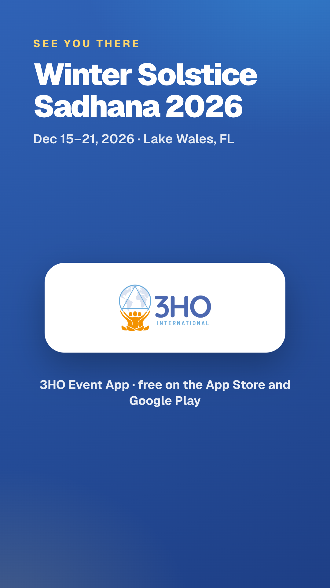
“See you at Winter Solstice Sadhana. Sat Nam.”